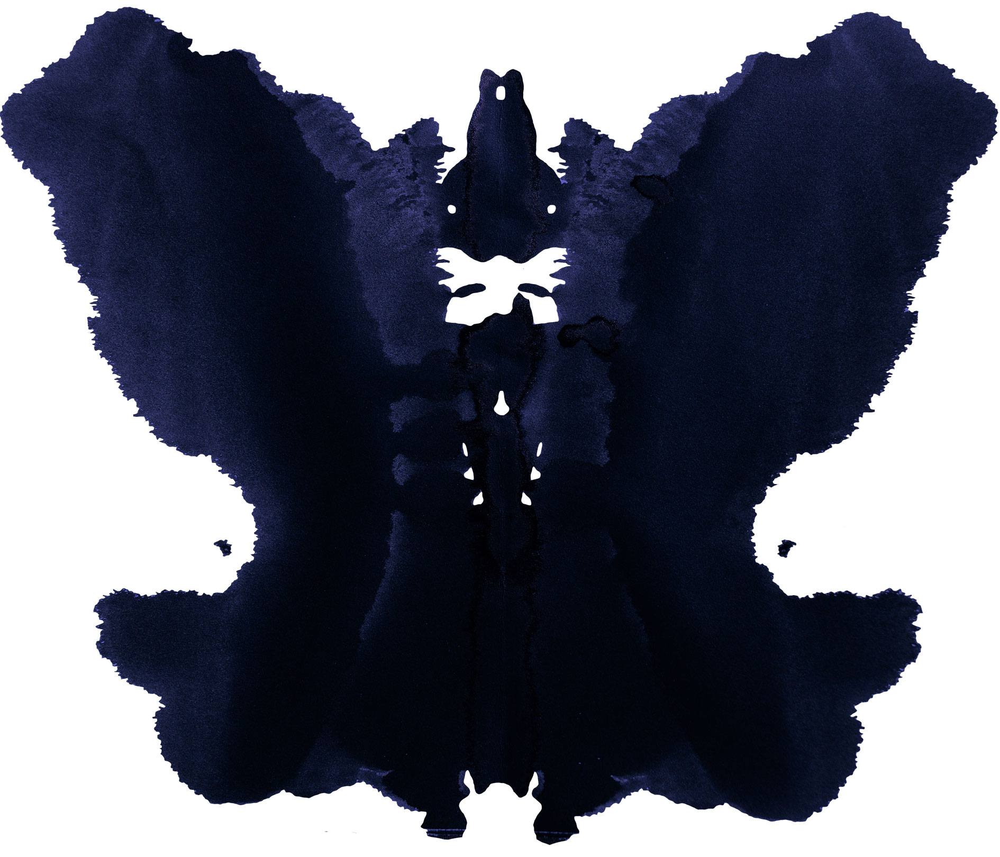

Data drives independence.
Numin is the personal quantitative research of Verdi Ergün.
A private project exploring model-driven approaches to global markets — for curiosity, study, and to trade his own capital. Where others see chaos, the models look for the pattern.
Numin is a personal research project used solely to trade Verdi Ergün's own capital. It is not a fund, not an investment adviser, and does not manage outside money or solicit capital. Nothing here is an offer, solicitation, or financial advice.

Fig.01 — signal in the noise